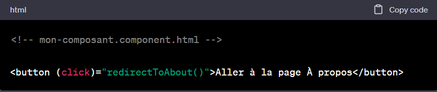
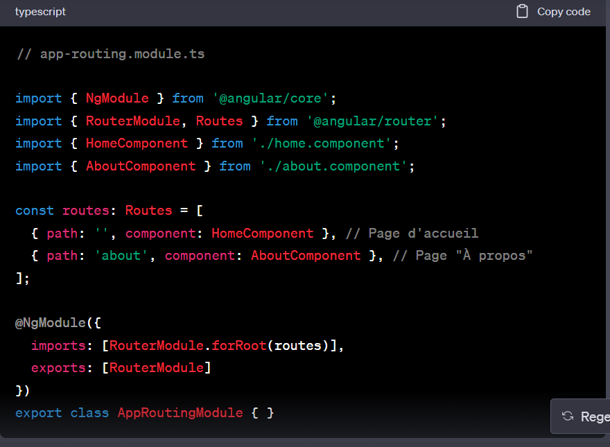
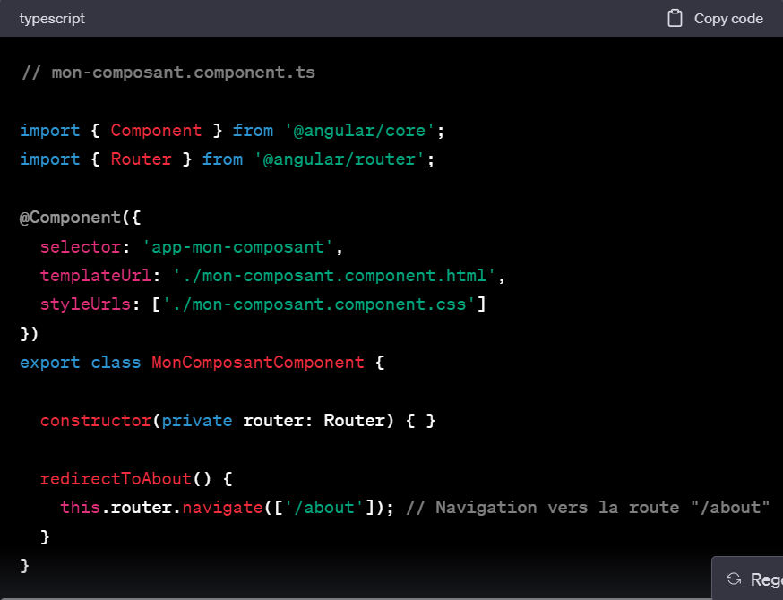

Routeur
Les etapes
-
Créez un bouton qui réagit au clic
Dans votre fichier de template HTML (par exemple,
mon-composant.component.html), ajoutez un bouton avec un événement (click)
pour réagir au clic de l'utilisateur :

-
Définissez le chemin (route) dans votre fichier de routage :
Dans votre module de routage (AppRoutingModule ou équivalent), définissez
le chemin (route) vers la page "À propos" en associant cette route à un
composant :

-
Implémentez la méthode pour gérer le clic du bouton :
Dans le fichier TypeScript de votre composant (par exemple,
mon-composant.component.ts), définissez la méthode redirectToAbout() pour
effectuer la navigation vers la route "/about" lorsque le bouton est
cliqué :
